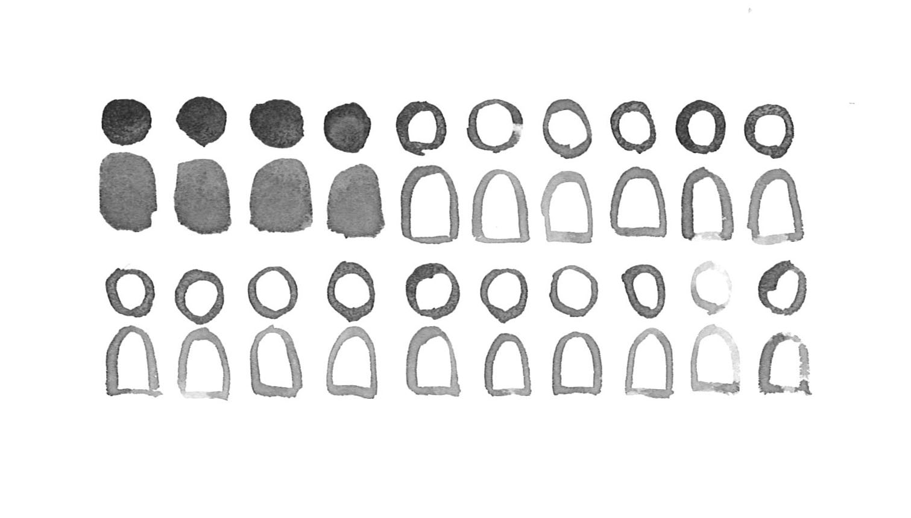

Activists at the People’s Climate March in NYC, 2017
"Climate Justice for All" by Joe Brusky is licensed under CC BY-NC 2.0
Story by Paricha Duangtaweesub, Olutayo Falase, and Tymor Hamamsy
The Silent Constituency
Can 20 million votes influence political action around climate change?
This is exactly the question raised by the Environmental Voters Project, a non-profit whose research identified this potentially game-changing group of registered voters who ranked climate and environmental issues as one of the most important issues they will vote on. In the 2014 midterm elections, only 4 million of these people voted.
If we are to believe that political change comes from starting small and voting locally, then these environmental voters will decide the future of climate policy. Are we seeing some promising signs for the 2018 midterm elections and beyond?
We think so.
"People all over this country, whether Republican or Democrat, are worried about our planet. Now is the time that people will start to vote for the environmental issues that matter to them"
Activists at the Climate March in DC, 2017
by Stephen Melkisethian is licensed under CC BY-NC 2.0
Marching for our Future
Protests give voice to the masses. They are a manifestation of grassroots activism and are fundamental to our democracy.
The first People’s Climate March took place in 2014 as a call to action, in response to the UN Climate Summit taking place in New York City. While the estimated number of protestors varies, it was clear that there was a critical mass of environmentalists - people who are willing to speak up and demand change from their political leaders spreading anti-environment agendas.
On April 29th, 2017 - one week after the March for Science - once again, the environmentalists flooded the streets of Washington, D.C. and over 300 other major cities in the US and around the world. This time, however, the atmosphere was that of resistance rather than solidarity.

The March coincided with Trump’s 100th day in office and it had very specific political decisions to rally against including (but definitely not limited to) his appointment of climate science skeptic Scott Pruitt to lead the Environmental Protection Agency, his signing of two executive orders approving the development of the Keystone XL Pipeline by bypassing environmental regulations, and his intent to pull out of the Paris Accord (a promise he has since fulfilled).
In perfect symmetry to the Trump administration’s anti-climate actions, there is now a diverse group of activists galvanized into taking their first steps.
“I grew up in the Vietnam War era—I was opposed to the war but I did not really protest … This is the first time I’ve ever really marched.”
“If you’re in your first few years of grad school, you can lull yourself into a false sense of complacency … I don’t think that I can solely be a research scientist anymore.”
“It’s so much more than just a bunch of people walking around … everyone is here for a good cause.”
The People’s Climate March in NYC, 2014
"People's Climate March New York" by Climate Action Network is licensed under CC BY-NC 2.0
These marches were unprecedented, both in terms of their scale and the broad diversity of the protesters who attended them. These marches are one of the many symptoms of a broken political system where the upper echelons of our government are failing to meet the demands of its constituents.
This is why we’re seeing cities and states stepping to the plate.
Climate FOMO: Cities & States Joining the Paris Accord
On November 6, 2018, Republican Bruce Rauner will seek re-election as Governor of Illinois, against the Democratic candidate J.B. Pritzker, who tweeted:
If Pritzker were to win, he’ll join the 17 Governors in the US Climate Alliance - a bipartisan coalition of governors committed to the goals of the Paris Accord started by Governors Andrew Cuomo of New York, Jay Inslee of Washington, and Jerry Brown of California on June 1st 2017, the same day that Trump announced the U.S.’s exit from the Paris Accord.
If Pritzker were to win, he’ll join the 17 Governors in the US Climate Alliance - a bipartisan coalition of governors committed to the goals of the Paris Accord started by Governors Andrew Cuomo of New York, Jay Inslee of Washington, and Jerry Brown of California on June 1st 2017, the same day that U.S.’ departsof the Paris Accord.
The Alliance represents 40% of the US population and half of the US economic production at $9 trillion. Unsurprisingly, states with higher emissions (controlling for GDP) are less likely to follow the Paris Accord. In response to the inaction of their state governors, many mayors are signing up for the Accord. There are now 409 “Climate Mayors” who have also signed the Paris Accord by forming their own coalition that includes cities from 48 states.
“Cities and local leaders are on the frontlines of the fight against climate change”
A View From the Top
Politicians stick religiously to their party line when it comes to environmental issues. This divide is clearly reflected by the National Environmental Scorecard - the percentage of pro-environmental bills that the politician supported - for the House of Representatives.
Of the 35 environmental bills voted on in 2017, 124 Republicans scored zero (always voted against the environment) while 84 Democrats scored a perfect score (always voting pro-environment), bringing the average score for the House Republican caucus to 5% and the House Democratic caucus to 94%.
A positive observation from this is the change of voting records in 2017. Compared to their average lifetime score, the majority of Democrats leaned into their pro-environmental stance and more than a few Republicans appeared to have positively changed theirs too. This is shown by the overall increase in the Environmental Score, as shown by each point - representing a Congressperson - above the dotted line at 0%.
This change - galvanized, perhaps, by the actions of the Trump administration - is one that better reflects the attitudes of local politics, as evident by the People’s Climate March and cities and states taking up the Paris Accord.
If we look at every congressperson from every state and political party and compare their Scorecard with the number of environmentalists who did not vote in the 2014 midterm elections (as a percentage of their state’s voter turnout), there is a lot of hope for the 2018 midterms. Many congressmen with the worst environmental records are in states where the non-voting environmentalists represent over 20% of voter turnout.
At the individual level, recent surveys show that liberal democrats ranked global warming as the fourth most important issue when deciding who to vote for in 2018 Congressional election and that even in the Trump base, six out of every ten voters support taxing and/or regulating the pollution that causes global warming.
These sentiments are reflected in the nationwide changes in climate perception between 2014 and 2016 on several facets, as shown in the interactive graph below. Across the country, we see an increase in support for funding renewable energy research and heightened levels of worry about global warming, amongst other factors. This points to a positive swing in voters' minds about climate issues - one that we hope would drive people to the polls.
-25% . . . . . . . . . . . . . . . . . +25%
November 6th, 2018
In the short-run, the true strength of the climate movement led by our environmental voters will be tested by the upcoming midterm elections and continued support for the Climate Mayors and Governors who chose to uphold the Paris Accord. We believe that there are activated voters who will lead the charge in the long-run, and we are confident that change, as it has been, will start from the ground up.
In the process of researching this story, we also uncovered data and narratives that present a highly partisan view of climate policy-making. This raised an intriguingly open-ended question:
What if, rather than candidates, we get to vote on issues that are dear to our hearts? What if we don’t have to choose between Party and Policy?
Perhaps then, we - the people, the politicians, the businesses - can really work together for our Planet A.